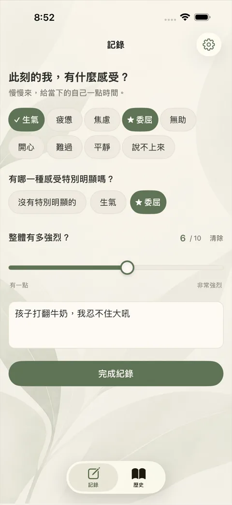
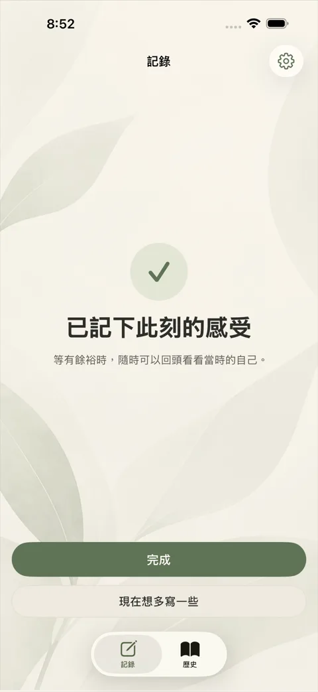
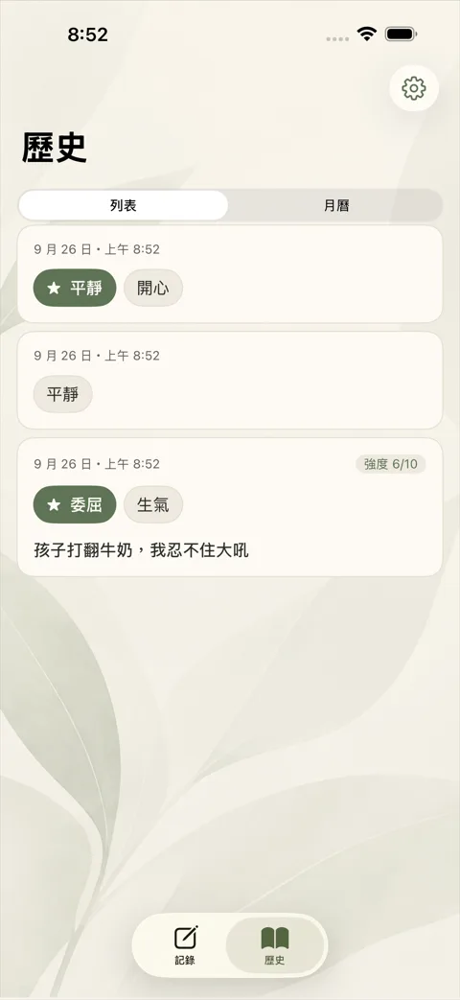
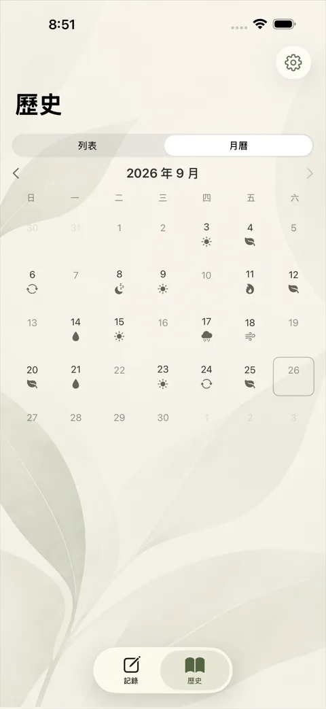
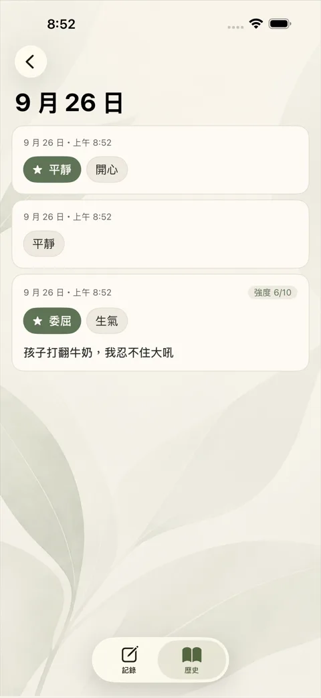
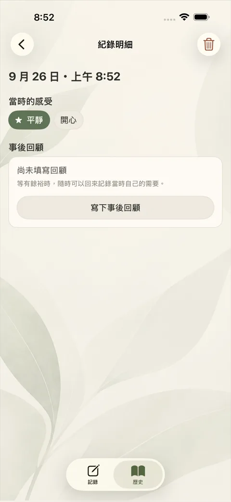

心有一處
願每一種感受，心裡都有一處可以安放
給父母的私人情緒日誌。在情緒湧上來的當下，用幾秒鐘記下自己的感受；等有餘裕時，再回頭看看當時的自己。
只屬於你
不需要帳號，資料預設只存在你的 iPhone，開啟需要 Face ID 或密碼。
不分析、不評價
沒有圖表、沒有分數，也不用 AI 解讀你的感受。
不追蹤
App 沒有廣告、分析或追蹤工具，我們看不到你寫的任何內容。
畫面預覽





